전자계산기제어산업기사 (2013-09-28 기출문제)
1과목: 전자회로
1. 다음 그림은 피변조파의 주파수 스펙트럼(spectrum)을 나타낸 것이다. 어떠한 변조 방식인가? (단, fc는 반송파이고, fm은 변조파이다.)
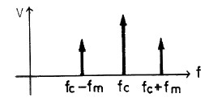
- AM
- FM
- PM
- PWM
(정답률: 알수없음)

2. 그림과 같은 단안정 멀티바이브레이터에서 트랜지스터 Q2가 ON(포화)상태에서 OFF(차단)상태로 되었다가 다시 ON 상태로 되는데 걸리는 동작시간 T는?
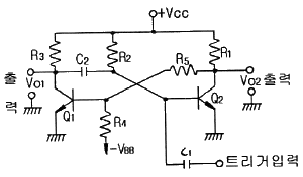
- T = R1C2ln2
- T = C2R3ln2
- T = C1R2ln2
- T = C2R2ln2
(정답률: 알수없음)
3. 연산증폭기에 대한 설명 중 옳은 것은?
- 높은 입력 오프셋 전압을 갖는 연산증폭기는 낮은 전압 드리프트를 갖는다.
- 연산증폭기의 입력 바이어스 전류란 두 입력단자를 통해 흘러들어가는 전류의 평균값이다.
- 연산증폭기의 슬루율(Slew Rate)이란 출력전압의 변화율을 입력 전압의 변화율로 나눈 값이다.
- 연산증폭기의 개방루프이득이 100000 이고, 동상이득이 0.25 이면 동상신호제거비(CMRR)는 56[dB]이다.
(정답률: 알수없음)
4. 펄스파에서 펄스의 상승부분에서 진동의 정도를 말하며, 높은 주파수 성분에 공진하기 때문에 생기는 것은?
- sag
- overshoot
- ringing
- duty cycle
(정답률: 알수없음)
5. 수정 발진기는 수정 진동자의 리액턴스 주파수 특성이 어떻게 될 때 안정한 발진을 지속하는가?
- 유도성
- 용량성
- 저하엉
- 임피던스성
(정답률: 알수없음)
6. FET 3정수의 온도 특성 중 옳지 않은 것은?
- 온도가 높아지면 드레인 저항 rd는 증가한다.
- 온도가 높아지면 상호 콘덕턴스 gm은 감소한다.
- 증폭정수 μ는 온도의 변화에 관계없이 일정하다.
- 온도가 높아지면 상호 콘덕턴스 gm은 증가한다.
(정답률: 55%)
7. B급 푸시풀(Push-Pull) 증폭기에 사용되는 두 개의 트랜지스터는?
- 두 개의 npn 트랜지스터
- 두 개의 pnp 트랜지스터
- 한 개의 npn 트랜지스터와 한 개의 n 채널 MOSFET
- 한 개의 npn 트랜지스터와 한 개의 pnp 트랜지스터
(정답률: 알수없음)
8. 접합형 J-FET에서 드레인 포화전류 IDSS = 10[mA]이고, 드레인 전류의 차단전압 VP(VGS(off)) = -3[V], 게이트 전압 VGS = -1.5[V] 일 때 드레인 전류는 몇 [mA] 인가?
- 1.5 [mA]
- 2.5 [mA]
- 5 [mA]
- 10 [mA]
(정답률: 알수없음)
9. α차단 주파수가 50[MHz]인 트랜지스터인 β차단 주파수는 약 몇 [MHz] 인가? (단, α = 0.98 이다.)
- 0.5[MHz]
- 1[MHz]
- 1.5[MHz]
- 2[MHz]
(정답률: 알수없음)
10. 연산증폭기의 슬루 레이트(slew rate)는 어떤 특성에 크게 영향을 주는가?
- 잡음 특성
- 이득 특성
- 스위칭 특성
- 동상 제거 특성
(정답률: 알수없음)
11. 부궤환(negative feedback) 증폭기의 특징이 아닌 것은?
- 잡음이 감소된다.
- 대역폭이 감소된다.
- 주파수 특성이 개선된다.
- 비직선 왜곡이 감소된다.
(정답률: 알수없음)
12. 진폭변조(DSB) 방식에서 변조도를 90[%]로 하면 피변조파의 전력은 반송파 전력의 약 몇가 되는가?
- 1.1배
- 1.4배
- 1.6배
- 2.1배
(정답률: 알수없음)
13. 10진수 (57)10을 BCD 코드로 변환하면?
- 0101 0111
- 1101 0111
- 0111 0110
- 0111 1110
(정답률: 알수없음)
14. 다음의 회로에 구형파를 인가하면 출력 Vo의 파형은? (단, RC>>T 이다.)
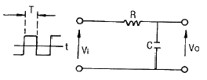
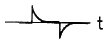
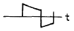
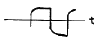
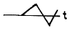
(정답률: 알수없음)
15. 궤환 회로가 발진을 하기 위해서는 Barkhausen 발진 조건을 만족해야 한다. A가 발진기의 증폭도, β가 궤환량을 나타낼 때 이 조건을 바르게 나타낸 것은?
- βA = 0
- βA ＞ 10
- βA = 1
- βA ＜ ∞
(정답률: 알수없음)
16. 전원회로에서 무부하 때 직류 출력 전압이 150[V], 전부하 때의 출력전압이 125[V] 이었다면 전압변동률은?
- 13[%]
- 15[%]
- 20[%]
- 25[%]
(정답률: 알수없음)
17. 다음과 같은 연산증폭기에서 출력 전압은?
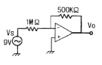
- 0[V]
- -4.5[V]
- 9[V]
- -18[V]
(정답률: 알수없음)
18. 다음 그림의 PCM 회로 구성에서 빈칸에 들어갈 회로는?
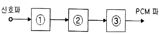
- ① 표본화 회로 ② 양자화 회로 ③ 부호화 회로
- ① 표본화 회로 ② 부호화 회로 ③ 양자화 회로
- ① 부호화 회로 ② 양자화 회로 ③ 표본화 회로
- ① 양자화 회로 ② 표본화 회로 ③ 부호화 회로
(정답률: 알수없음)
19. 부궤환 증폭회로에서 거의 변환되지 않는 것은?
- 잡음
- 비직선 일그러짐
- 이득대역폭 적
- 입·출력 임피던스
(정답률: 알수없음)
20. 다음 회로에서 저항 Re의 역할로서 가장 적합한 것은?
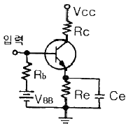
- 증폭도 증대
- 주파수대역 증대
- 바이어스 전압 감소
- 동작점의 안정화
(정답률: 알수없음)
2과목: 디지털공학
21. 정수를 기억시키기 위하여 8비트 레지스터를 사용하고 있다. 이 때 MSB를 부호 비트(Sign Bit)로 사용한다면 기억시킬 수 있는 최대값은?
- +256
- +255
- +128
- +127
(정답률: 알수없음)
22. 병렬 전송시 버스를 이루는 선들의 수는 레지스터의 bit수와 어떠한 관계가 있는가?
- 같다.
- 1/2 이다.
- 2배 이다.
- 22 이다.
(정답률: 알수없음)
23. 2114는 1K×4 이다. 16K×8 메모리 시스템을 위하여 2114는 몇 개가 필요한가?
- 4개
- 8개
- 16개
- 32개
(정답률: 알수없음)
24. 카운터와 디코더로 T0 ~ T15 까지 타이밍 신호를 생성하려면 몇 비트 카운터와 어떤 디코더가 필요한가?
- 4bit카운터와 4 × 16 디코더
- 4bit카운터와 2 × 4 디코더
- 16bit카운터와 4 × 16 디코더
- 16bit카운터와 4 × 4 디코더
(정답률: 알수없음)
25. 다음 논리회로가 의미하는 것은?
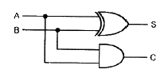
- 일치회로
- 2진 비교기
- 반가산기
- 전가산기
(정답률: 알수없음)
26. 디코더(decoder)는 어떤 회로의 집합으로 이루어지는가?
- AND 회로
- OR 회로
- NOT 회로
- NOR 회로
(정답률: 알수없음)
27. 동기식 카운터와 비동기식 카운터를 비교 설명한 것 중 옳은 것은?
- 동기식 카운터는 각 플립플롭의 clock에 동기되는 카운터이다.
- 동기식 카운터는 비동기식 카운터에 비해서 안정되지 못하는 결점이 있다.
- 동기식과 비동기식 카운터는 플립플롭에 공통으로 클록(clock)이 공급된다.
- 동기식 up-counter는 기억소자는 응용될 수 있다.
(정답률: 알수없음)
28.
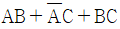
의 논리식을 간략화한 것은?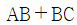
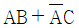
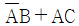
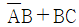
(정답률: 알수없음)
29. f(A, B, C) = ∏(1, 2, 3, 5) 일 때 f′ 을 바르게 나타낸 것은?
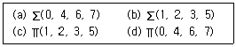
- (a), (c)
- (a), (d)
- (b), (c)
- (b), (d)
(정답률: 알수없음)
30. 10진수 (15+20)를 EXCESS-3코드로 변환하고 합을 구하여 EXCESS-3코드로 표현하면?
- 0011 0101
- 1001 1011
- 0011 1000
- 0110 1000
(정답률: 알수없음)
31. 존슨카운터 회로에 대한 설명으로 틀린 것은?
- 입력값은 순환된다.
- 시프트 카운터라고도 한다.
- 동기식 카운터이다.
- N개의 플립플롭으로 2N 개의 상태를 나타낼 수 있다.
(정답률: 알수없음)
32. JK 플립플롭의 특징은?
- inverter의 단점 보완
- D 플립플롭의 단점 보완
- T 플립플롭의 단점 보완
- RS 플립플롭의 단점 보완
(정답률: 알수없음)
33. 클록 펄스가 입력될 때 마다 출력 상태가 Low와 High 동작을 반복하며 변환되는 플립플롭은?
- JK 플립플롭
- RS 플립플롭
- D 플립플롭
- T 플립플롭
(정답률: 알수없음)
34. A/D 변환기나 I/O 장치를 제어하는 코드에 주로 사용하는 것은?
- Shift Counter Code
- GRAY Code
- BCD Code
- 표준 2진화 10진 Code
(정답률: 알수없음)
35. Z = AB + CD의 논리식을 만족하지 않는 논리회로는?
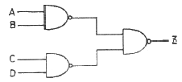
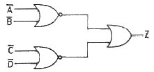
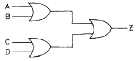
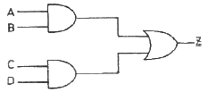
(정답률: 알수없음)
36. 그림과 같은 CMOS 게이트의 기능은?
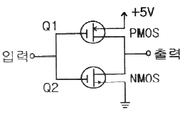
- AND 기능
- OR 기능
- NOT 기능
- NOR 기능
(정답률: 알수없음)
37. 다음 중 불대수의 관계식의 옳지 않은 것은?
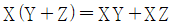
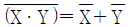
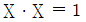
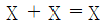
(정답률: 알수없음)
38. 다음 논리회로의 이름은?
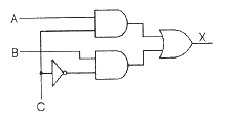
- 디코더
- 인코더
- 디멀티플렉서
- 멀티플렉서
(정답률: 알수없음)
39. 다음 그림은 멀티플렉서를 이용한 논리회로이다. 이 회로에 대한 논리함수는?
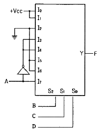
- F(A, B, C, D) = ∑(0, 1, 3, 4, 8, 9, 15)
- F(A, B, C, D) = ∑(0, 2, 5, 6, 10, 11, 14)
- F(A, B, C, D) = ∑(1, 3, 8, 11, 14, 15)
- F(A, B, C, D) = ∑(1, 2, 6, 8, 9, 14)
(정답률: 알수없음)
40. 다음 논리회로에서 F의 논리식은?
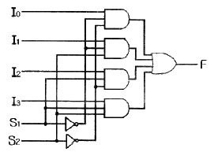
- F = S1′S2′I0 + S1′S2I1 + S1S2′I2 + S1S2I3
- F = S1′S2′I0 + S1S2′I1 + S1S2′I2 + S1S2I3
- F = S1′S2′I0 + S1′S2I1 + S1′S2I2 + S1S2I3
- F = S1′S2′I0 + S1′S2′I1 + S1S2′I2 + S1S2I3
(정답률: 알수없음)
3과목: 마이크로프로세서
41. 직렬 통신에서 통신을 허가 한다는 뜻으로 사용되는 프로토콜은?
- XON
- SCON
- XOFF
- PCON
(정답률: 알수없음)
42. 인텔 마이크로프로세서에서 어드레스와 데이터를 분리할 때 사용되는 신호와 IC는?
- AGND, 74HC374
- ACK, 74HC245
- ALE, 74HC573
- APP, 74HC574
(정답률: 알수없음)
43. 다음 인터럽트 종류 중 순위가 가장 높은 것은?
- 타이머 인터럽트
- 마스크 불가능(Non-Maskable) 인터럽트
- 시리얼 포트 송수신용 인터럽트
- 외부 인터럽트
(정답률: 알수없음)
44. ISR(인터럽트 서비스 루틴)의 마지막 명령은?
- CALL 명령
- PUSH 명령
- POP 명령
- RETURN 명령
(정답률: 알수없음)
45. 명령 파이프라인(Instruction Pipeline)의 설명으로 가장 옳은 것은?
- CPU의 파이프라인 시스템은 메모리사용 마찰로 인하여 그 활용이 더욱 증가하고 있다.
- 명령파이프라인은 다른 프로세서 사이클을 포함하도록 확장할 수 없다.
- 실행 사이클과 페치 사이클을 중첩시킬 수 있다.
- 명령 파이프라인은 LIFO(Last In First Out)버퍼를 사용해서 구성한다.
(정답률: 알수없음)
46. 매크로 프로세서의 기능과 패스가 바르게 연결된 것은?
- 매크로 정의 인식 - 패스2
- 매크로 호출 및 확장 및 아규먼트 치환 – 패스2
- 매크로 정의 확장 - 패스1
- 매크로 호출 인식 – 페스1
(정답률: 알수없음)
47. 다음 중 DC 모터의 속도를 제어하는 방식은?
- 워치독(Watchdog) 방식
- PWM(Pulse Width Modulation) 방식
- 바이폴라(bipolar) 방식
- 유니폴라(unipolar) 방식
(정답률: 알수없음)
48. 다음 센서의 종류를 설명한 것 중 틀린 것은?
- 온도 센서 : 온도 검출 센서
- 레벨 센서 : 수위를 측정하는 센서
- 리니어 스케일 : 거리를 전기적 신호로 바꾸어주는 센서
- 포토 센서 : 물체의 하중이나 인장을 검출하는 센서
(정답률: 알수없음)
49. 대부분의 CPU가 직렬포트를 가지고 있지만 포트의 입출력 신호는 5V, OV로 RS-232C 통신을 하기 위해서는 외부에서 신호의 레벨을 변화시켜 주어야 한다. 이러한 기능을 해주는 통신 드라이버 칩은?
- MAX158
- MAX232
- MAX481
- MAX485
(정답률: 알수없음)
50. 클록 소스가 아니라 어떤 사건(event)을 입력 받을 때 이를 헤어리는 것을 무엇이라 하는가?
- 직렬 통신
- 인터럽트
- 카운터
- 타이머
(정답률: 알수없음)
51. 다음 UART에 대한 설명으로 틀린 것은?
- UART의 원어는 Universal Asynchronous Receiver Transmitter 이다.
- Start bit가 필요하다.
- 8비트 UART의 구성은 1개의 Start bit, 8개의 Data bit, 1개의 Stop bit 이다.
- 9비트 UART의 구성은 1개의 Start bit, 9개의 Data bit 이다.
(정답률: 알수없음)
52. 데이터 전송명령에 대한 설명 중 틀린 것은?
- 로드(load) 명령은 주기억장치에 저장된 데이터를 처리하기 위해 마이크로프로세서 내의 누산기로 데이터를 전송하는 명령이다.
- 스토어(Store) 명령은 마이크로프로세서 내부에서 처리된 데이터를 주기억장치에 저장하기 위한 데이터 전송명령이다.
- 데이터 전송 명령은 주기억장치와 입출력장치 사이의 입출력 명령을 포함한다.
- 데이터 전송 명령은 자주, 많이 사용하는 것이 좋다.
(정답률: 알수없음)
53. 다음 중 RISC 구조의 특징이 아닌 것은?
- 상대적으로 적은 수의 명령어
- 단일 사이클의 명령어 실행
- 효과적인 명령어 파이프라인 사용
- 마이크로프로그램된 제어 로직 사용
(정답률: 알수없음)
54. 비동기 전송 방식에서 사용되는 용어가 아닌 것은?
- 스타트 비트
- 스톱 비트
- 패리티 비트
- 동기 비트
(정답률: 알수없음)
55. 메이저 상태(Major State)에 대한 설명으로 옳지 않은 것은?
- Fetch state : 명령을 읽고 해독
- Interrupt state : 인터럽트 처리
- Indirect state : 유효 주소를 계산
- Execute state : 실행 및 Indirect state로 복귀
(정답률: 알수없음)
56. 다음 중 인터럽트 발생시 처리하는 사항이 아닌 것은?
- 프로세서 내의 사용하던 레지스터 기억
- 시스템에 정해진 특정 번지로 분기
- 복귀 주소의 기억
- 스택의 크기 계산
(정답률: 알수없음)
57. 함수와 프로시저의 설명 중 틀린 것은?
- 함수는 일반적으로 자신을 호출한 루틴에 값을 돌려준다.
- 프로시저는 일반적으로 자신을 호출한 루틴에 값을 돌려주지 않아도 된다.
- 함수나 프로시저 모두 변수, 제어문 등으로 구성되어 있다.
- 프로시저 정의 시 반드시 매개 변수가 있어야 한다.
(정답률: 알수없음)
58. 명령어가 OP 코드 6비트, 오퍼랜드 16비트로 구성되어 있다. 이 명령어를 쓰는 컴퓨터는 최대 몇 가지의 동작이 가능한가?
- 6
- 16
- 22
- 64
(정답률: 알수없음)
59. 다음 중 디스플레이 장치에 관한 설명으로 틀린 것은?
- LCD(Liquid Crystal Display)의 약자로서 산업용 표시장치에 많이 사용된다.
- LED는 반도체의 PN 접합부에서 전자와 정공이 결합될 때 전자로부터의 약간의 에너지 손실에 의해 빛이나 열로 방출되는 원리를 이용한 소자이다.
- LCD는 인가전압에 따른 액정 투과도의 변화를 이용한다.
- LED에서 저항은 다이오드에 흐르는 전압을 제한하기 위하여 사용되며 이를 전압 제한 저항이라고 한다.
(정답률: 알수없음)
60. 동시에 양쪽 방향으로 송·수신이 가능한 전송 방식은?
- Full-duplex
- Half-duplex
- Double-duplex
- Single-duplex
(정답률: 알수없음)
4과목: 프로그래밍언어
61. BNF 표현기법 중 정의를 의미하는 것은?
- #
- →
- = =
- : :=
(정답률: 알수없음)
62. 기계어에 대한 설명으로 옳지 않은 것은?
- 0과 1의 이진 문자열로 이루어져 있다.
- 고급 언어(high level language)에 해당한다.
- 제어를 위해서는 매우 효율적이지만 작성이 어려운 단점이 있다.
- 기종마다 기계어가 다르므로 언어의 호환성이 없다.
(정답률: 알수없음)
63. 어셈블리어의 의사(Pseudo)코드 명령에 대한 설명으로 옳지 않은 것은?
- 어셈블러가 원시프로그램을 번역할 때 어셈블러에게 번역에 필요한 정보를 전달하는 기능을 한다.
- 기계어로 번역되지 않고 어셈블러에게 특정 작업을 지시하는 역할을 수행한다.
- 대표적인 명령으로 DC, LA, ST 등이 있다.
- 세그먼트와 프로시저 정의, 매크로 정의, 리스트 파일의 지정 등을 지시할 수 있다.
(정답률: 알수없음)
64. C 언어에서 문자형 자료 선언시 사용하는 것은?
- char
- float
- double
- int
(정답률: 알수없음)
65. C 언어에 대한 설명으로 옳지 않은 것은?
- 이식성이 높은 언어이다.
- 컴파일 과정 없이 실행 가능하다.
- 시스템 소프트웨어의 용도로 사용하기에 용이하다.
- 다양한 연산자를 제공한다.
(정답률: 알수없음)
66. C 언어에서 저장 클래스를 명시하지 않는 변수는 기본적으로 어떤 변수로 간주되는가?
- auto
- global
- local
- extern
(정답률: 알수없음)
67. 어셈블리어에 대한 설명으로 옳지 않은 것은?
- 컴퓨터 기종마다 공통된 프로그램을 사용할 수 있다.
- 기계어보다 프로그램 작성하기가 쉽다.
- 기계어를 사용하기 쉽도록 만든 기호화 언어이다.
- 고급 프로그램과 비교할 때 실행 속도가 빠르다.
(정답률: 알수없음)
68. 매크로 프로세서의 기능에 해당하지 않는 것은?
- 매크로 호출 저장
- 매크로 정의 저장
- 매크로 정의 인식
- 매크로 호출 인식
(정답률: 알수없음)
69. 인터프리터 방식의 언어는?
- COBOL
- C
- BASIC
- FORTRAN
(정답률: 알수없음)
70. C 언어의 제어 구조 중 실행한 다음, 조건을 검사하여 반복 실행의 여부를 결정하는 문은?
- for 문
- while 문
- do ~ while 문
- switch ~ case 문
(정답률: 알수없음)
71. 어셈블리어에서 서브루틴을 호출하는 명령은?
- LOOPE
- JMP
- CALL
- LOOP
(정답률: 알수없음)
72. 어셈블러를 두 개의 패스로 구성하는 주된 이유는?
- 한 개의 패스만을 사용하면 프로그램의 크기가 증가하여 유지보수가 어렵다.
- 한 개의 패스만을 사용하면 메모리가 많이 소요된다.
- 기호를 정의하기 전에 사용할 수 있어 프로그램 작성이 용이하다.
- 패스 1, 2의 어셈블러 프로그램이 작아서 경제적이다.
(정답률: 알수없음)
73. C 언어에서 기억 클래스의 종류가 아닌 것은?
- 자동(automatic) 변수
- 정적(static) 변수
- 레지스터(register) 변수
- 내부(internal) 변수
(정답률: 알수없음)
74. 소스 프로그램(Source Program)의 문자열(Stream)을 프로그램 구성의 기본 요소(Token)로 구분하는 작업을 무엇이라고 하는가?
- Preprocessor
- Lexical Analysis
- Syntax Analysis
- Semantic Analysis
(정답률: 알수없음)
75. 어셈블리어에서 라이브러리에 기억된 내용을 프로시저로 정의하여 서브루틴으로 사용하는 것과 같이 사용할 수 있도록 그 내용을 현재의 프로그램 내에 포함시켜 주는 명령은?
- INCLUDE
- EXTRN
- ORG
- SEGMENT
(정답률: 알수없음)
76. C 언어에서 문자열 입력 함수는?
- putchar ( )
- puts ( )
- getchar ( )
- gets ( )
(정답률: 알수없음)
77. C 언어에서 이스케이프 시퀀스의 설명이 옳지 않은 것은?
- ＼b : back slash
- ＼t : tab
- ＼r : carriage return
- ＼f : form feed
(정답률: 알수없음)
78. 어셈블리어에서 어떤 기호적 이름에 상수 값을 할당하는 명령은?
- EQU
- EVEN
- ORG
- ASSUME
(정답률: 알수없음)
79. 어셈블리어로 작성된 프로그램이 실행되기까지의 과정이 옳은 것은?
- 원시프로그램 → 어셈블 → 목적프로그램 → 링크 → 로딩 → 실행
- 원시프로그램 → 어셈블 → 목적프로그램 → 로딩 → 링크 → 실행
- 원시프로그램 → 링크 → 어셈블 → 목적프로그램 → 로딩 → 실행
- 원시프로그램 → 어셈블 → 링크 → 목적프로그램 → 로딩 → 실행
(정답률: 알수없음)
80. 다음 트리를 전위식(Prefix) 형태로 옳게 나타낸 것은?
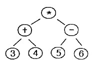
- 3 + 4 * 5 - 6
- * + 3 4 - 5 6
- 3 4 + 5 6 - *
- * + - 3 4 5 6
(정답률: 알수없음)